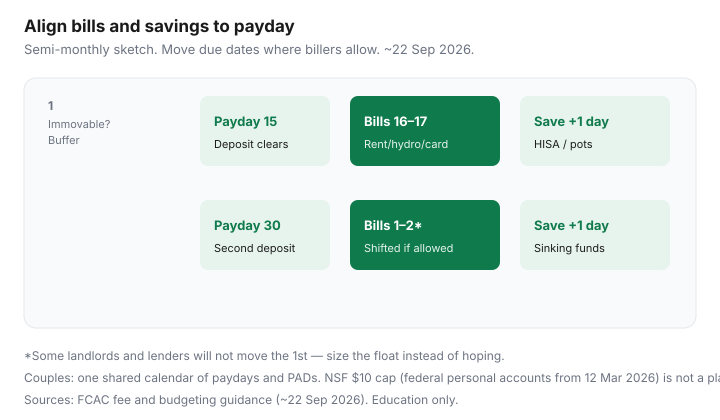

Personal Finance · Canada
Build a Canadian Cashflow Calendar: Align Bills, Payday, and Savings Transfers
NSF fees are often a calendar bug, not a character flaw. Bills hit mid-cycle, payday is biweekly, and the savings transfer never leaves chequing because the account looks empty on the 17th. A Canadian cashflow calendar aligns due dates, paydays, and savings transfers so the float survives the month.
Education only. NSF rules referenced ~22 Sep 2026. Confirm your bank’s posting times and each biller’s due-date options.
Disclosure: Banking, HISA, and budgeting tools are offer types. Saving Optimizer may later add partner links. We do not currently claim partnerships. This is education, not debt-relief advice. No payday-loan offers.
Key takeaways
- List every bill with due date and amount before you automate anything.
- Shift due dates toward payday where utilities, cards, and insurers allow.
- Automate savings the morning after payday clears — not in the same PAD race.
- Build buffer weeks for biweekly vs semi-monthly pay patterns.
- Couples need one shared calendar even if spending accounts stay separate.
List every bill with due date and amount
One sheet, one hour: mortgage/rent, hydro, gas, water, internet, phones, insurance, childcare, subscriptions you will keep, minimum debt payments. Write due date, amount, and whether it is a PAD or manual. Add payroll dates for the next 60 days. This list is the calendar — apps are optional.
Align due dates to payday where utilities and banks allow
Many Canadian utilities, telecoms, and card issuers let you pick a due date online. Move large PADs to the day after payday when possible. Landlord and some lender dates will not move — those need a larger float instead of wishful scheduling. Document each change confirmation email.

Automate savings the morning after payday
Use the pay-yourself-first mechanic: payroll lands, wait one business day, then transfer to named HISA / registered pots. Details in automate savings after payday. The cashflow calendar’s job is to ensure rent and hydro are not competing for the same morning.
Buffer weeks for biweekly vs semi-monthly pay
| Pay pattern | Calendar risk | Buffer habit |
|---|---|---|
| Biweekly (26 pays) | Some months have three pays; mid-month can still feel tight | Park “third pay” toward sinking funds; keep one week of bills as float |
| Semi-monthly (24 pays) | Deposits on 15th and last day; bills on the 1st hurt | Move due dates to 16th/2nd where allowed; float covers immovable 1st |
| Monthly | One long gap | Larger float; weekly self-allowance from the monthly deposit |
Federally regulated banks: personal NSF fees capped at $10 from 12 March 2026 — still not free, and credit unions may differ. Design the calendar so the cap is irrelevant. See NSF design.
Couple workflow: one shared calendar
One shared Google/Apple calendar or a paper month on the fridge with paydays in green and PADs in black is enough. Recurring “savings transfer” events prevent the “I thought you moved it” failure. Separating fun money is fine; separating due-date knowledge is how double rent drafts happen.
A 30-day cashflow calendar template
- Week before month start: update amounts that changed.
- Mark all paydays.
- Cluster movable due dates 1–2 days after paydays.
- Place savings transfers at payday + 1 business day.
- Place sinking-fund skims on the same transfer day.
- Note any immovable 1st-of-month bills and size the float.
- After month end: count NSF/overdraft events — target zero.
Sources & date stamps
- FCAC — banking fees, NSF consumer information, budgeting tools (used ~22 Sep 2026).
- Federal NSF $10 cap on personal deposit accounts at federally regulated banks from 12 March 2026 (confirm live).
- Issuer and biller due-date tools — verify per provider.
Frequently asked questions
Should I move every bill to payday?
Move what the biller allows — many utilities and cards let you pick a due date. Some landlords and lenders do not. Align what you can; buffer what you cannot.
When should the savings transfer run?
One business day after payday clears, after the spending float is safe. Same-morning races with rent PADs cause NSF.
Biweekly and semi-monthly pay feel different — why?
Biweekly creates two ‘extra’ pays in some years; semi-monthly is 24 pays with steadier mid-month timing. Your calendar must match the real deposit pattern, not a generic month template.
Do couples need one shared calendar?
One shared view of due dates and paydays prevents duplicate payments and missed PADs. Separate spending money can still exist underneath.
What belongs on the calendar besides bills?
Payroll dates, savings transfers, sinking-fund skims, and known annual lumps (insurance, property tax). That is enough — not every coffee.